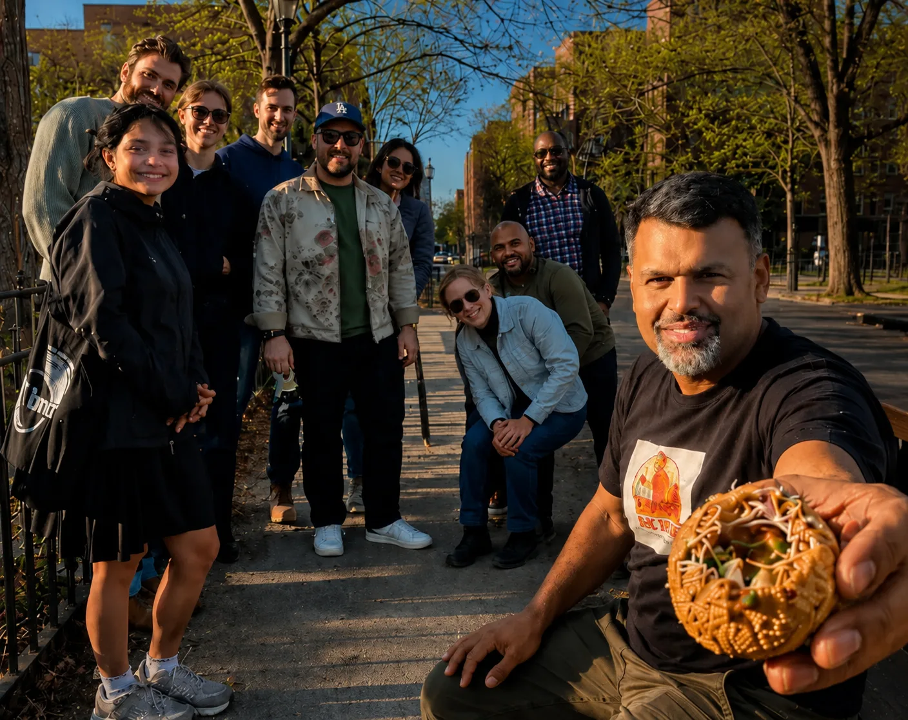

Masala Chai
Not the Starbucks version. Real masala chai brewed with Assam tea, whole spices, and full-fat milk — the way it's made in South Asian homes and shops across Jackson Heights.
Queens food tour · Jackson Heights, NYC · Private walks with a local Queens food tour · Private walks with a local
Jackson Heights, Queens is where New York actually eats. Walk with Jim through chai spots, momo counters, fuchka stalls, and neighborhood stories that no tourist map will ever show you.
Real NYC food is in Queens. Walk with Jim through chai, momos, fuchka, and the stories behind them.
 5.0 on Google · 13 reviews · "A must-do for Queens/Jackson Heights."
5.0 · 13 reviews · "A must-do."
5.0 on Google · 13 reviews · "A must-do for Queens/Jackson Heights."
5.0 · 13 reviews · "A must-do."

What you'll eat
Jackson Heights is one of the most culinarily diverse neighborhoods on earth. On a Chai Bhai food tour you'll taste dishes that most New Yorkers have never heard of, from communities that have been cooking them here for decades.
Not the Starbucks version. Real masala chai brewed with Assam tea, whole spices, and full-fat milk — the way it's made in South Asian homes and shops across Jackson Heights.
Tibetan and Nepali dumplings steamed or fried, served with a fiery tomato-sesame dipping sauce. Jackson Heights has some of the best momos outside of Kathmandu.
Hollow crispy spheres filled with spiced potato and tamarind water — a Bangladeshi and Bengali street snack you eat in one bite. It is impossible to explain and easy to love.
Depending on your route and preferences, Jim may take you to South Asian sweets shops, Latin American bakeries, local grocers, and vendors that don't show up on any app.
Why Queens over Manhattan
The 11372 zip code in Jackson Heights has been called the most ethnically diverse urban area on the planet. Over 160 languages are spoken within a few blocks. The food reflects it — South Asian, East Asian, Tibetan, Nepali, Colombian, Ecuadorian, and more, side by side on the same street.
Most NYC food tours stay in Manhattan, where restaurants are polished, expensive, and built for tourists. Jackson Heights is where New York's immigrant communities actually live and eat. That's a completely different kind of food tour.
25–30 minutes on the E, F, M, or 7 train from Midtown. Jim sends clear meeting point details after booking.
No scripted stops at famous restaurants. Jim takes you to the places locals eat, shops that don't advertise, and spots you'd walk past without knowing what you were missing.
Every Chai Bhai tour is private — just you, your group, and Jim. You move at your pace and ask real questions.
Queens food tour options
All tours are private, all depart from Jackson Heights, Queens. Food is included on the 2-hour and 3-hour walks.
Best if your schedule is tight.
Best first Queens food tour for most visitors.
Best for food lovers and repeat visitors.
What guests say
"I had visited Jackson Heights a couple of times, but felt there was so much I did not really understand. I picked the three-hour tour for a deep dive, and left feeling like an insider."
Getting to Jackson Heights
Jackson Heights is one of the most transit-accessible neighborhoods in Queens. From most of Manhattan you're looking at a single subway ride with no transfers.
Take the E, F, or M train from any stop on 6th Avenue to Jackson Heights–Roosevelt Ave. About 25–30 minutes door to door.
Take the 7 train from Times Square directly to 74th Street–Broadway in Jackson Heights. About 20–25 minutes, no transfers.
Take the AirTrain to Jamaica, then the E or F train two stops to Jackson Heights. About 35–40 minutes total — a great first stop after landing.
Jim sends the exact meeting spot after booking. It's easy to find and right off the subway exit — no navigating required.
FAQ
Chai Bhai Walking Tours offers private food and culture tours of Jackson Heights, Queens — the most culturally diverse neighborhood in New York City. You'll taste momos, masala chai, fuchka, and local street food with guide Jim, who knows the neighborhood intimately.
About 25–30 minutes on the E, F, M, or 7 subway from Midtown Manhattan. It's an easy, direct ride. Jim sends the exact meeting point after booking.
On a Chai Bhai food tour you'll typically taste masala chai, momos (Tibetan dumplings), fuchka (South Asian street snacks), and other specialties depending on your route. The 2-hour and 3-hour tours include complimentary chai and food tastings.
Absolutely. Food writers, chefs, and longtime New Yorkers regularly name Jackson Heights as one of the best eating destinations in all of NYC. The neighborhood packs South Asian, Tibetan, Nepali, Colombian, and Ecuadorian food into just a few blocks — most of it unknown outside the local community.
Every Chai Bhai tour is private — just you, your group, and Jim. No strangers, no megaphone, no group shuffle. You move at your pace and stop where you want.
Yes. Families are welcome and the pace can be adjusted. Jackson Heights is a lively, safe, and fascinating neighborhood for kids too.
Ready to eat your way through Queens?
Come hungry, come curious. Jim will take care of the rest.